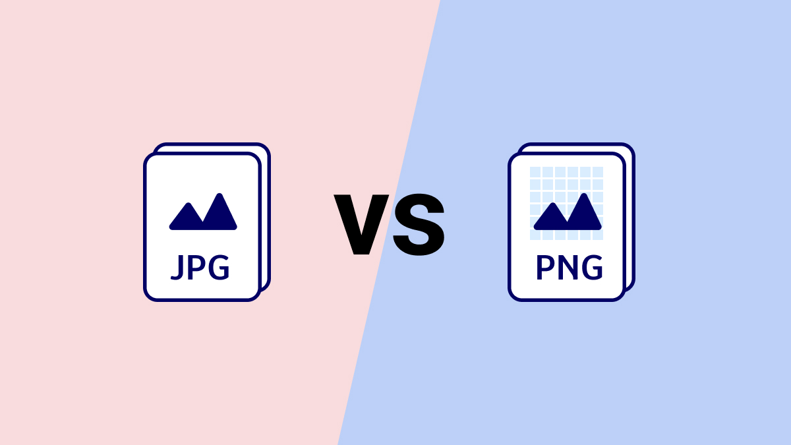

JPG or PNG?
The simple answer
It depends on what you need the image for. If you need transparency for a website, you're required to use PNG. If you need a lighter file size, go with JPG.
In short, PNG supports transparency and delivers better quality but results in a larger file. JPG doesn't support transparency and has lower quality, but the file size is significantly smaller.
Here's a list of use cases for JPG and PNG
Why do JPG images lose quality?
When you save a JPG file, the image gets simplified: some of the visual information is discarded to reduce the file size. This compression algorithm removes fine details and makes gradients less precise. Tones and color accuracy are partially lost. The result is a lighter file, but one that's less faithful to the original.
This process doesn't happen just once. Every time you open, edit, and re-save a JPG, the compression is applied again. As a result, quality decreases progressively — each save strips away a few more details than the version before.
